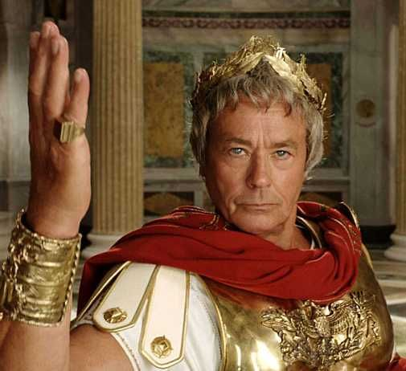

Шифратор
Введіть ключ(будь яке число)
Введіть не шифрований текст
Шифрований текст
Меню
Шифр Цезаря

Шифр Цезаря або шифр зсуву — симетричний моноалфавітний алгоритм шифрування, в якому кожна буква відкритого тексту заміняється на ту, що віддалена від неї в алфавіті на сталу кількість позицій.
Римський імператор Юлій Цезар використовував для приватного листування шифр зсуву з ключем 3 — замість літери A підставляв D, замість B — E і так далі.
Як і будь-який моноалфавітний шифр, Цезарів вразливий до частотного криптоаналізу.
Навіть легше зламати його простим перебором, бо кількість можливих ключів зовсім невелика — для українського алфавіту 32 варіанти.
Метод Цезаря не надає майже ніякого криптографічного захисту, але він ліг в основу дещо складніших алгоритмів, наприклад шифру Віженера.
Варіант шифру зсуву ROT13 використовується в англомовному сегменті інтернету для приховування спойлерів, розгадок головоломок тощо.
Принцип дії

Принцип дії полягає в тому, щоб циклічно зсунути алфавіт, а ключ — це кількість літер, на які робиться зсув.
Якщо зіставити кожному символу алфавіту його порядковий номер (нумеруючи з 0), то шифрування і дешифрування можна виразити формулами:
Y = (x+k)mod n
Y = (x-k)mod n
де "x" — порядковий номер символу відкритого тексту, "Y" — порядковий номер символу шифрованого тексту, "n" — потужність алфавіту, а "k" — ключ.
Можна помітити, що суперпозиція двох шифрувань на ключах k(1) і k(2) є просто шифруванням на ключі k(1)+k(2).
Більш загально, множина шифруючих перетворень шифру Цезаря утворює групу Z(n).
Шифратор
Введіть ключ(будь яке число)
Введіть не шифрований текст
Шифрований текст
Дешифратор
Введіть ключ(будь яке число)
Введіть шифрований текст
Дешифрований текст
Частотний аналіз
Частотний аналіз, частотний криптоаналіз — метод криптоаналізу, який ґрунтується на частоті появи знаків шифротексту. Власне — на припущенні про існування нетривіального статистичного розподілу окремих символів і їх послідовностей як у відкритому тексті, так і в шифротексті, який, з точністю до заміни символів, буде зберігатися в процесі шифрування і дешифрування. Спрощено, частотний аналіз передбачає, що частота появи заданої літери алфавіту в досить довгих текстах одна і та ж для різних текстів однієї мови. При цьому у випадку моноалфавітного шифрування якщо в шифротексті буде символ з аналогічною ймовірністю появи, то можна припустити, що він і є зазначеною зашифрованою буквою. Аналогічні міркування застосовуються до біграм (двобуквених послідовностей), триграм і т.д. у разі поліалфавітного шифрів.
Приклад частотного аналізу
Не шифрований текс
ананас барабан вишня гриб дерево експансія єнот жук заєць кит іграшка їжак йога корова лимон морква ноги очі півень рак сонце телефон ураган фара хліб цукерка черепаха шишка щітка місяць юрта яблуко
Діаграмма для не шифрованого тексту
Шифрований текс
Діаграмма для шифрованого тексту